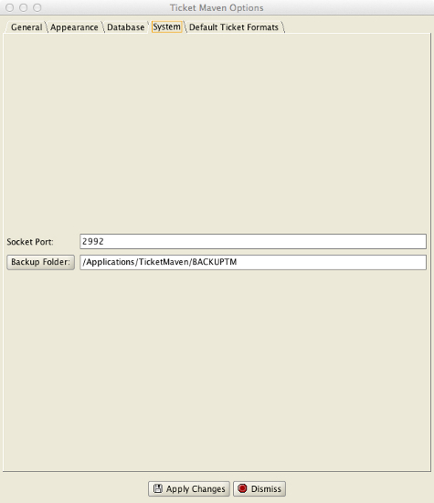

Back Up Folder
TicketMaven has an automatic backup feature that will create a backup of the TicketMaven database every time the program exits.
This feature is not enabled by default. To enable this feature, go to the System tab of the TicketMaven options (File->Options) and select a backup folder. Once selected, TicketMaven will create database backups in this folder.
It is strongly suggested that the backup folder be on a separate machine or at least a separate physical hard-drive from the one where TicketMaven’s database is located.
